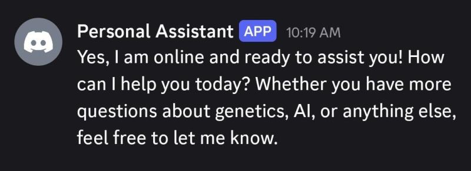

side A · track 02
AI Agents
a local LLM that lives in Discord
A Discord bot backed by a self-hosted language model: an open-weight Qwen model served by Ollama, wrapped in a Qwen-Agent assistant and shipped as a Docker Compose service.
AI

what it is
The idea is a personal assistant you can talk to right inside Discord, without sending conversations to a paid API. The model runs locally through Ollama's OpenAI-compatible endpoint, so swapping models is a single environment variable.
It's also the base for something bigger: the Qwen-Agent framework supports tools and MCP servers, so the same bot can grow into an agent that acts, not only answers.
how it works
- ListenIn direct messages the bot always answers; in servers it only replies when someone @mentions it.
- RememberEach channel keeps a short rolling history of the last 20 messages, so replies have context.
- ThinkThe history goes to a Qwen-Agent Assistant running
qwen2.5:7b-instructon Ollama. - ReplyThe answer is split into chunks under Discord's 2,000-character limit and posted back to the channel.